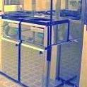
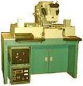
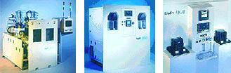

Lithography/Etch
The
fabrication of circuits on silicon wafers requires that several
different layers, each with a different
pattern,
be
deposited
on the surface one at a time, and that
doping
of the active regions be done in very controlled amounts over tiny
regions of precise areas. The various patterns used in depositing
layers and doping regions on the substrate are defined by a process
called
lithography.
Simply
put, the lithography process generally consists of the following
steps. A layer of
photoresist
(PR) material is first
spin-coated
on the surface of the wafer. The resist layer is then selectively
exposed to radiation such as ultraviolet light, electrons, or xrays,
with the exposed areas defined by the exposure tool,
mask, or computer
data.
After exposure, the PR layer is subjected to
development
which destroys unwanted areas of the PR layer, exposing the
corresponding areas of the underlying layer. Depending on the
resist type, the development stage may destroy either the exposed or
unexposed areas. The areas with no resist material
left on top of them are then subjected to additive or subtractive
processes, allowing the selective
deposition
or
removal
of material on the substrate.
During
development, the unwanted areas in the PR are
dissolved
by the
developer.
In the case wherein the exposed areas become soluble in the developer, a
positive image of the mask pattern is produced on the resist. Such
a resist is therefore called a
positive photoresist.
Negative photoresist layers result in negative images of the mask
pattern, wherein the exposed areas are made less soluble in the
developer. Wafer fabrication may employ both positive and negative photoresists, although positive resists are preferred because they offer
higher resolution capabilities.
|
 |
 |
|
Fig.
1. Photo of a Photoresist Spin Coater/Developer
|
Fig.
2.
Photo of
a Mask Aligner
for aligning masks to wafers |
Photoresist
materials consist of three components: 1) a
matrix material
(also known
as resin), which provides body for the photoresist; 2) the
inhibitor
(also referred to as sensitizer), which is the photoactive ingredient;
and 3) the
solvent,
which keeps the resist liquid until it is applied to the substrate.
Etching
is the process of
removing regions of the underlying material that are
no longer protected by photoresist after development. The rate at
which the etching process occurs is known as the
etch rate.
The etching process is said to be
isotropic
if it proceeds in all directions at the same rate. If it proceeds
in only one direction, then it is completely
anisotropic.
Since etching processes generally fall between being completely isotropic and
completely anisotropic, an etching process needs to be described in
terms of its level of isotropy.
Wet
etching, or etching with the use of
chemicals,
is generally isotropic. On the other hand,
dry
etching processes that employ reactive
plasmas
are generally
anisotropic.
Reactive
plasma
etching
involves the removal of surface material not protected by lithographic
masks using chemically active species. These species are usually
oxidizing and reducing agents produced from process gases that have been
ionized
and fragmentized by a glow discharge. The species
react
with the exposed surface material, removing them from the substrate
while forming volatile byproducts in the process.
See
also:
Resist Processing;
Electron Lithography;
Optical Lithography; Wet
Etching;
Pattern Transfer Defects;
Die Delayering;
The
Lift-Off Process;
Masks
and Reticles

Fig.
3. Examples of
Etching Systems
Wafer Fab
Links:
Incoming
Wafers;
Epitaxy;
Diffusion;
Ion
Implant;
Polysilicon;
Dielectric;
Lithography/Etch;
Thin
Films;
Metallization;
Glassivation;
Probe/Trim
See Also:
IC
Manufacturing; Wafer Fab Equipment
HOME
Copyright
©
2001-2006
www.EESemi.com.
All Rights Reserved.